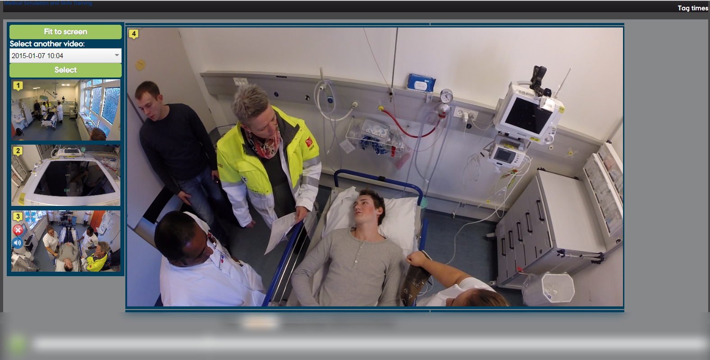
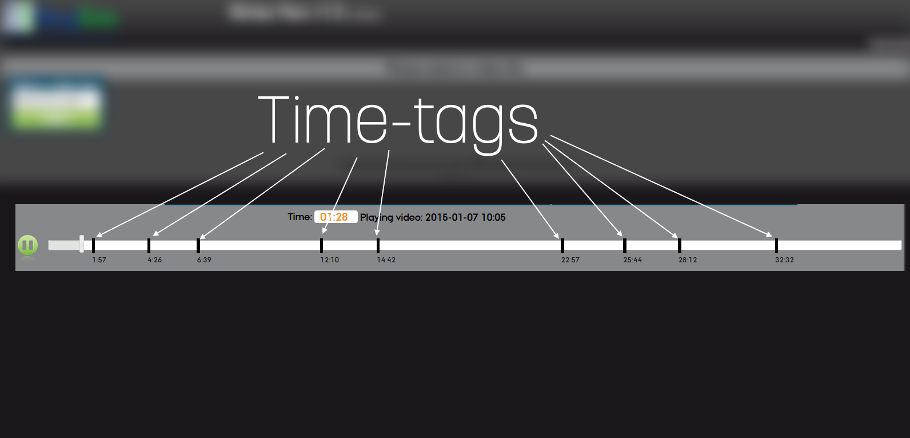
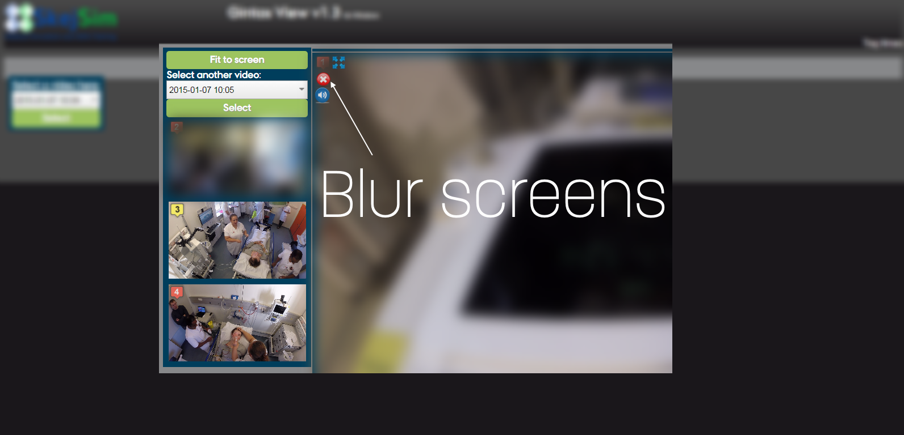

GintasView official
- about
- download
- contact
to see more
about GintasView
GintasView is OpenSource AV solution supporting In Situ Simulation.
The system makes use of “off the shelf” hardware components which are widely available and easily replaced or expanded. The developed AV software and coding is contracted to be available as Copyleft Open Source to ensure low cost and a potential continues improvement and expansion of the AV system.
-
User-friendly, easy to use interface
-
4 screens compatibility
-

Resizable screens
-
Multi-function controlling
-
Adaptive timeline
-

Timetags
-

Blurring screens
-
Audio source selection
-
Full screen compatibility
-

Full screen compatibility
-
Time-tagging
-
All-devices compatible time-tagging
News
19.08.2014 - more functionality: audio source selection, blur and fullscreen.
12.08.2014 - blurring function added.
08.08.2014 - changed icons to more stylish ones.
08.07.2014 - Official version: v1.3.
29.07.2014 - developed an installation file (script).
24.06.2014 - website design changed to "Aarhus University" style.
13.06.2014 - implemented the timetagging system.
03.06.2014 - added time (minutes:seconds) on timeline.
27.05.2014 - audio source selection added.
26.05.2014 - added a timeline. Videos can be skipped to certain time on a mouse click..
21.05.2014 - official version: v1.2.
20.05.2014 - possibility to resize videos on click.
05.05.2014 - stream of multiple videos when selecting only one video's date.
28.04.2014 - all 4 videos are playing synchronic.
24.04.2014 - skipping video to certain time added.
16.04.2014 - selection list added - possibility to choose which video to stream.
08.04.2014 - first corpses of the web-interface.
how-to
GintasView might be a little complicated to use at the beginning.
installation
Before installing, make sure you have downloaded
Chrome browser for better performance.
Chrome browser for better performance.
1. Download GintasView *.zip file
2. Read "README!" file before you proceed.
3. Unpack downloaded file.
4. Run INSTALL.bat file.
5. Two softwares will be asked to install.
6. When installing "WAMP server", you will be asked to select default browser.
7. Navigate to "C:/Program Files (x86)/Google/Chrome/Application/" and select "Chrome".
8. Wait for files to be copied and black window disappear.
>> You might also want to configure your smartphone or tablet to do time-tagging while recording.
Follow this step-by-step to tutorial to learn how.
Installation is done. More detailed step-by-step
instructions can be found in "README!" file.
Hardware set-up can be found here!
usage
Before using the system, check if WAMP server is running (green icon)
and you have a table called "timetags" in MySQL database.
1. Make sure all four GoPro Hero3 cameras have the same date/time.
2. Make sure your Windows machine has the same time as cameras.
3. Turn on WiFi and connect all four cameras to the same remote control.
4. Check if remote control shows "4 CAMS READY" on screen.
5. Open your browser and navigate to time-tagging page.
6. At the same time, press "Record" button on remote and "Start" button on time-tagging page.
7. Tag times while recording by clicking "Tag time" button.
8. After recording is finished, at the same time press "Record" button on remote and "Stop" button on time-tagging page.
9. Click "Done" button. Your time-tags will be saved to database.
10. Open localhost page.
11. Select recorded video by date from the list.
12. Videos will be loaded together with time-tags.